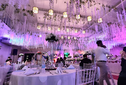

Welcome to Faustino's Events Place!

A place where you can happily enjoy events with friends and family!
You are invited to celebrate a joyous day which is the day El Roi Sambo came into this world
Let us all have an exciting and fun experience celebrating a worthy day to rejoice. Singing songs, bringing laugther, and giving gifts to each other!
Worry not for Faustino's Events Place has it all for you!
Sequence of Events:
- 3:00 PM - Guest Arrival & Welcome Drinks
Guests are welcomed at the entrance and directed to the main event area. Light music sets a cheerful atmosphere as everyone settles in.
- 3:30 PM - Opening Remarks & Icebreaker Games
The host or emcee welcomes everyone, followed by a few light games to get guests engaged and excited.
- 4:00 PM - Main Activities & Entertainment
Interactive games, performances, or party activities begin. This can include a magician, karaoke, dance competitions, or themed games for both kids and adults.
- 5:00 PM - Food & Refreshments
Guests are invited to enjoy a delicious buffet or catered meal. Background music continues during this time for a relaxed vibe.
- 5:45 PM - Cake Cutting & Gift Opening
The birthday celebrant gathers everyone around for the cake-cutting ceremony, followed by singing “Happy Birthday” and opening gifts.
- 6:15 PM - Dance Floor & Photo Booth Fun
The lights dim and the dance floor opens. Guests can also visit the photo booth to take pictures and create lasting memories.
- 7:30 PM - Closing Activities & Thank You Message
A short thank-you speech is given by the host. Final games, music, or a slideshow can be included to wrap up the evening.
- 8:00 PM - Event Ends & Guest Departure
Guests say their goodbyes and leave with party favors, ending the celebration on a happy note.
Things to bring
- A Gift for the Celebrant
Guests are encouraged to bring a thoughtful gift or card to celebrate the special occasion.
- Comfortable Clothing and Footwear
Since there may be games, dancing, and other activities, wearing something comfortable and party-appropriate is ideal.
- Party Accessories (Optional)
Guests can bring fun accessories like hats, glow sticks, or themed costumes if the event has a specific theme.
- Camera or Phone for Photos
While the event house may have a photo booth, attendees often like capturing their own candid moments.
- Personal Essentials
Items such as medication, baby supplies (for families), or personal hygiene products should be brought if needed.
- A Positive and Festive Attitude
Most importantly, guests should bring their energy, smiles, and excitement to make the celebration lively and memorable.
If you want to learn more: